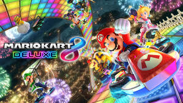
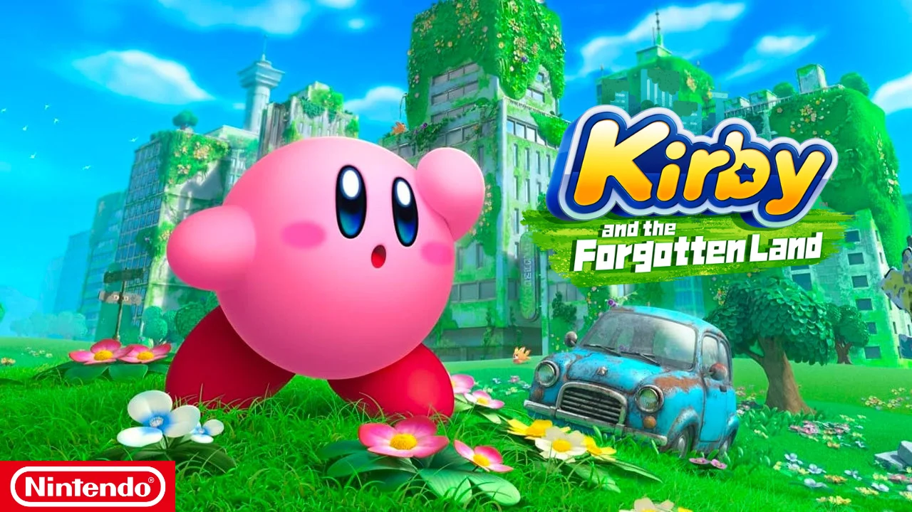

A Nintendo foi fundada no dia 23 de setembro de 1889 em Quioto, Japão, pelo artesão Fusajiro Yamauchi, originalmente sob o nome de Nintendo Koppai.

O Super Nintendo (Super Famicom no Japão) foi lançado como sucessor do NES, unindo-se à corrida de 16-bits iniciada pela NEC e SEGA. Lançado em 1990 no Japão, seguido por outros países, incluindo os EUA em 1991 e o Brasil em 1993, produzido pela Playtronic. Com jogos como Super Mario World e Street Fighter II, o Super NES superou o Mega Drive nos EUA e consolidou-se como líder da era de 16-bits. Seu sucesso foi impulsionado por parcerias com grandes desenvolvedoras como Capcom e Konami, que trouxeram séries populares como Final Fantasy e Mega Man. O console foi lançado com títulos aclamados, como Super Mario World e F-Zero, e foi sucedido pelo Nintendo 64 em 1996.

O Nintendo 64, lançado em 1996, foi um marco na quinta geração de consoles da Nintendo, com sua arquitetura de 64 bits permitindo gráficos 3D. Contava com títulos de lançamento como Super Mario 64 e PilotWings 64. Foi o último grande console doméstico a usar cartuchos até o Nintendo Switch. O console foi lançado pela Playtronic no Brasil e distribuído pela Concentra em Portugal. Apesar de seu hardware complexo, o N64 enfrentou desafios de programação para manter todos os processadores funcionando em sincronia.

O Nintendo GameCube, lançado em 2001 no Japão e América do Norte e em 2002 na Europa e Austrália, foi o sucessor do Nintendo 64. O console introduziu discos ópticos miniDVDs como meio de armazenamento e competiu com o PlayStation 2, Xbox e Dreamcast. Possuía recursos online limitados e conectividade com o Game Boy Advance. Apesar das críticas ao design e à falta de recursos, o GameCube recebeu elogios pelo controle e pela qualidade dos jogos. A Nintendo vendeu 21,74 milhões de unidades antes de descontinuar o console em 2007, sendo sucedido pelo Wii.
O Wii, lançado em 2006, foi um console da Nintendo da sétima geração, sucedendo o GameCube. Introduziu o Wii Remote e suportava serviços online como WiiConnect24 e Virtual Console. Liderou em vendas mundiais, com mais de 101 milhões de unidades vendidas até 2006. Foi descontinuado em 2013, após o lançamento do Wii U.

O Nintendo Switch, lançado em 2017, é um console híbrido da oitava geração, funcionando tanto como um console de mesa quanto portátil. Possui controles Joy-Con sem fio e suporta jogos online e multiplayer local. Os jogos são disponibilizados em cartuchos físicos ou digitalmente na Nintendo eShop. O console superou as vendas do seu antecessor, o Wii U, e competiu com consoles da oitava e nona geração, como Xbox One, PlayStation 4, Xbox Series X/S e PlayStation 5. Até dezembro de 2023, foram vendidas aproximadamente 139 milhões de unidades em todo o mundo, impulsionadas por títulos exclusivos da Nintendo como The Legend of Zelda: Breath of the Wild, Mario Kart 8 Deluxe e Animal Crossing: New Horizons.